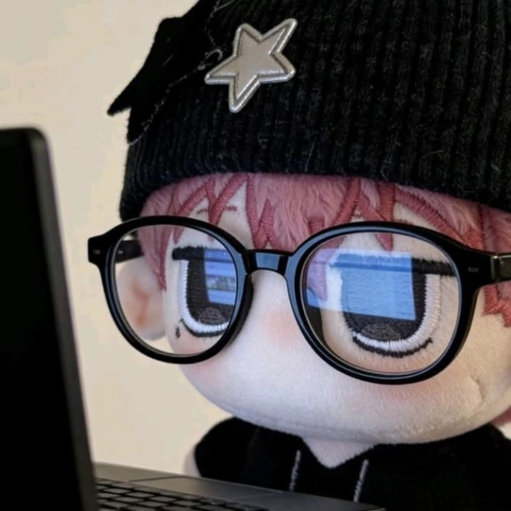
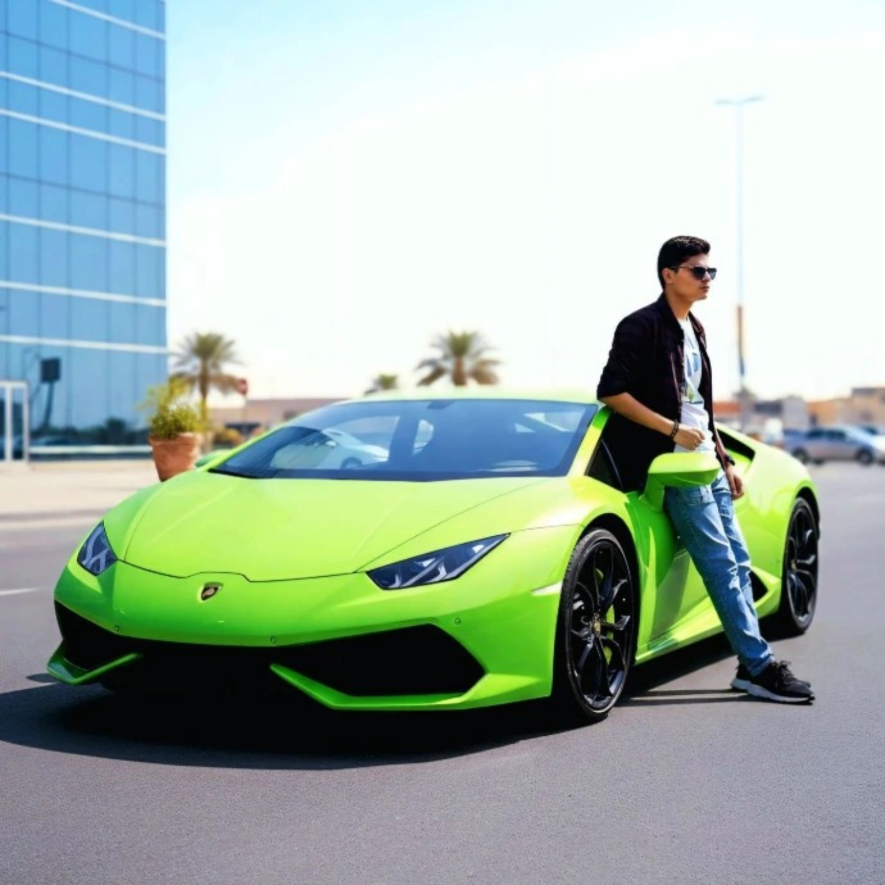

OWNER • FOUNDER
Paulhuyawr / Aevrnn
Founder and owner of ZentraMC. The vision, development, design and direction behind the network building Zentra into a community players can proudly call home.
ZentraMC is built around one simple idea — to create a Minecraft network that feels alive, competitive and worth coming back to.

Founder and owner of ZentraMC. The vision, development, design and direction behind the network building Zentra into a community players can proudly call home.

Second owner and a key part of the ZentraMC team, helping shape the network, its community and the experience players get every time they join.
ZentraMC is a growing Minecraft network focused
on Survival, Lifesteal, BedWars, SkyWars and
Practice. We're building the network step by
step from gameplay and events to community
features and a proper player experience.
The goal isn't just to make another server.
It's to build a place where players have reasons
to return, compete, create memories and become
part of something bigger.